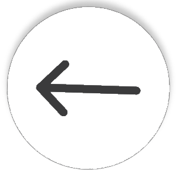
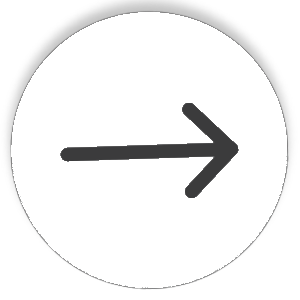

CSS - 14. Page Layout
Page Layout
with
CSS is easy. If you are used to laying out a page with tables, it may at first appear difficult, but it isn't, it's just different and actually makes much more sense.
You need to look at each part of the page as an individual chunk that you can shove wherever you choose. You can place these chunks absolutely or relative to another chunk.
Positioning
The
position property is used to define whether an element is
absolute,
relative,
static or
fixed.
The value
static is the default value for elements and renders the position in the normal order of things,
as they appear in the
HTML.
relative is much like
static, but the element can be offset from its original position with the properties
top,
right,
bottom and
left.
absolute pulls an element out of the normal flow of the HTML and delivers it to a world all of its own.
In this crazy little world, the absolute element can be placed anywhere on the page using
top, >
right,
bottom and
left.
fixed behaves like
absolute, but it will absolutely position an element in reference to the browser
window as opposed to the web
page, so, theoretically,
fixed elements should stay exactly where they are on the screen even when the page is scrolled.
Why theoretically? Why else - this works great in browsers such as Mozilla and Opera, but in
IE
it doesn't work at all.
Layout using absolute positioning
You can create a traditional two-column layout with absolute positioning if you have something like the following HTML:
<div id="navigation">
<ul>
<li><a href="this.html">This</a></li>
<li><a href="that.html">That</a></li>
<li><a href="theOther.html">The Other</a></li>
</ul>
</div>
<div id="content">
<h1>Ra ra banjo banjo</h1>
<p>Welcome to the Ra ra banjo banjo page. Ra ra banjo banjo. Ra ra banjo banjo. Ra ra banjo banjo.</p>
<p>(Ra ra banjo banjo)</p>
</div>
And if you apply the following CSS:
#navigation {
position: absolute;
top: 0;
left: 0;
width: 10em;
}
#content {
margin-left: 10em;
}
You will see that this will set the navigation bar to the left and set the width to 10 em's. Because the navigation is absolutely positioned, it has nothing to do with the flow of the rest of the page, so all that is needed is to set the left margin of the content area to be equal to the width of the navigation bar.
How bloody easy. And you aren't limited to this two-column approach. With clever positioning, you can arrange as many blocks as you like. If you wanted to add a third column, for example, you could add a 'navigation2' chunk to the HTML and change the CSS to:
#navigation {
position: absolute;
top: 0;
left: 0;
width: 10em;
}
#navigation2 {
position: absolute;
top: 0;
right: 0;
width: 10em;
}
#content {
margin: 0 10em; /* setting top and bottom margin to 0 and right and left margin to 10em */
}
The only downside to absolutely positioned elements is that because they live in a world of their own,
there is no way of accurately determining where they end. If you were to use the examples above and all of your pages had small navigation
bars and large content areas, you would be okay, but, especially when using relative values for widths and sizes, you often have to abandon any
hope of placing anything, such as a footer, below these elements. If you wanted to do such a thing, it would be necessary to float your chunks,
rather than absolutely positioning them.
Floating
Floating an element will shift it to the right or left of a line, with surrounding content flowing around it.
Floating is normally used to position smaller elements within a page (in the original default CSS for this site
Taking the HTML example below, you could apply the following CSS:
#navigation {
float: left;
width: 10em;
}
#navigation2 {
float: right;
width: 10em;
}
#content {
margin: 0 10em;
}
If you do not want the next element to wrap around the floating objects, you can apply the clear property. clear: left will clear left floated elements, clear: right will clear right floated elements and clear: both will clear both left and right floated elements. So if, for example, you wanted a footer to your page, you could add a chunk of HTML with the id 'footer' and then add the following CSS:
#footer {
clear: both;
}
And there you have it. A footer that will appear underneath all columns, regardless of the length of any of them.
This has been a general introduction to positioning and floating, with emphasis to the larger 'chunks' of a page, but remember, these methods can be applied to any element within those chunks too. With a combination of positioning, floating, margins, padding and borders, you should be able to represent ANY web design and there is nothing that can be done in tables that can not be done with CSS.
The ONLY reason for using tables for layout at all is if you are trying to accommodate ancient browsers. This is where CSS really shows its advantages - it results in a highly accessible page a fraction of the weight of an equivalent table-based page.
Learn CSS